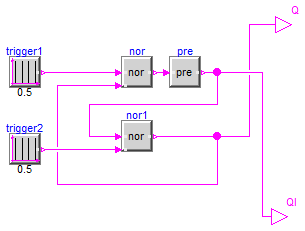
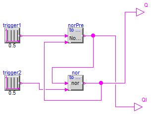

SR Flip Flop model that leads to a loop structure, but it is an artifical loop due to a memory element (pre)
Extends from Modelica.Icons.ExamplesPackage (Icon for packages containing runnable examples).
| Name | Description |
|---|---|
| Reference | Reference solution in pure Modelica |
| WithFMUsReference | Reference solution in pure Modelica using exactly the same structuring as in Model WithFMUs |
| WithFMUs | Solution with FMUs |
| For all models in this package an FMU must be generated |
Reference solution in pure Modelica

Extends from Modelica.Icons.Example (Icon for runnable examples).
| Type | Name | Default | Description |
|---|---|---|---|
| Boolean | Qini | false | Start value of Q at initial time |
| Type | Name | Description |
|---|---|---|
| output BooleanOutput | Q | |
| output BooleanOutput | QI |
Reference solution in pure Modelica using exactly the same structuring as in Model WithFMUs

Extends from Modelica.Icons.Example (Icon for runnable examples).
| Type | Name | Description |
|---|---|---|
| output BooleanOutput | Q | |
| output BooleanOutput | QI |
Solution with FMUs
Extends from Modelica.Icons.Example (Icon for runnable examples).
| Type | Name | Description |
|---|---|---|
| output BooleanOutput | Q | |
| output BooleanOutput | QI |